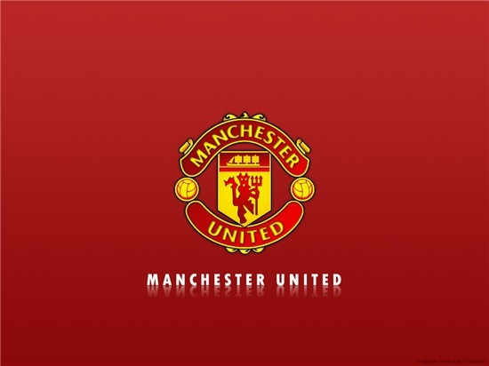

맨체스터 유나이티드
영국 잉글랜드 그레이트 맨체스터의 트래포드를 연고로 하는 프로 축구 클럽. 그레이터 맨체스터 주 뉴턴 히스에 '1878년' 중산층 노동자들 중 Lancashire Yorkshire의 뉴턴 히스 지사 노동자들이 쉬는 시간에 모여 만든 것이 그 유래며, 뉴턴 히스 LYR F.C.(Newton Heath LYR F.C.)란 이름으로 창설되었다. 1902년 4월 26일, LYR사와의 결별 이후 같은 그레이터맨체스터 주 트래포드로 연고이전하여 새롭게 지금의 이름, 맨체스터 유나이티드를 가지게 되었다. 현재 프리미어 리그 최다 우승팀이자 잉글랜드에서 유일하게 트레블을 달성한 명문 클럽이기도 하다.